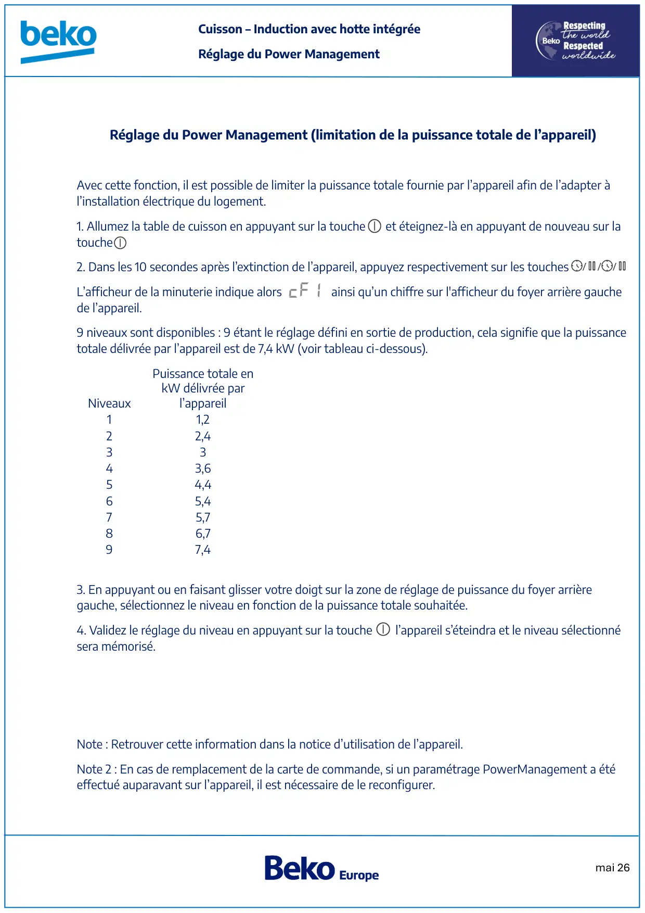

Induction hotte intégrée réglage PowerManagement

mai 26Cuisson – Induction avec hotte intégréeRéglage du Power ManagementRéglage du Power Management (limitation de la puissance totale de l’appareil)Avec cette fonction, il est possible de limiter la puissance totale fournie par l’appareil afin de l’adapter àl’installation électrique du logement.1. Allumez la table de cuisson en appuyant sur la touche et éteignez-là en appuyant de nouveau sur latouche2. Dans les 10 secondes après l’extinction de l’appareil, appuyez respectivement sur les touchesL’afficheur de la minuterie indique alors ainsi qu’un chiffre sur l'afficheur du foyer arrière gauchede l’appareil.9 niveaux sont disponibles : 9 étant le réglage défini en sortie de production, cela signifie que la puissancetotale délivrée par l’appareil est de 7,4 kW (voir tableau ci-dessous).NiveauxPuissance totale enkW délivrée parl’appareil11,222,43343,654,465,475,786,797,43. En appuyant ou en faisant glisser votre doigt sur la zone de réglage de puissance du foyer arrièregauche, sélectionnez le niveau en fonction de la puissance totale souhaitée.4. Validez le réglage du niveau en appuyant sur la touche l’appareil s’éteindra et le niveau sélectionnésera mémorisé.Note : Retrouver cette information dans la notice d’utilisation de l’appareil.Note 2 : En cas de remplacement de la carte de commande, si un paramétrage PowerManagement a étéeffectué auparavant sur l’appareil, il est nécessaire de le reconfigurer.
1 / 1